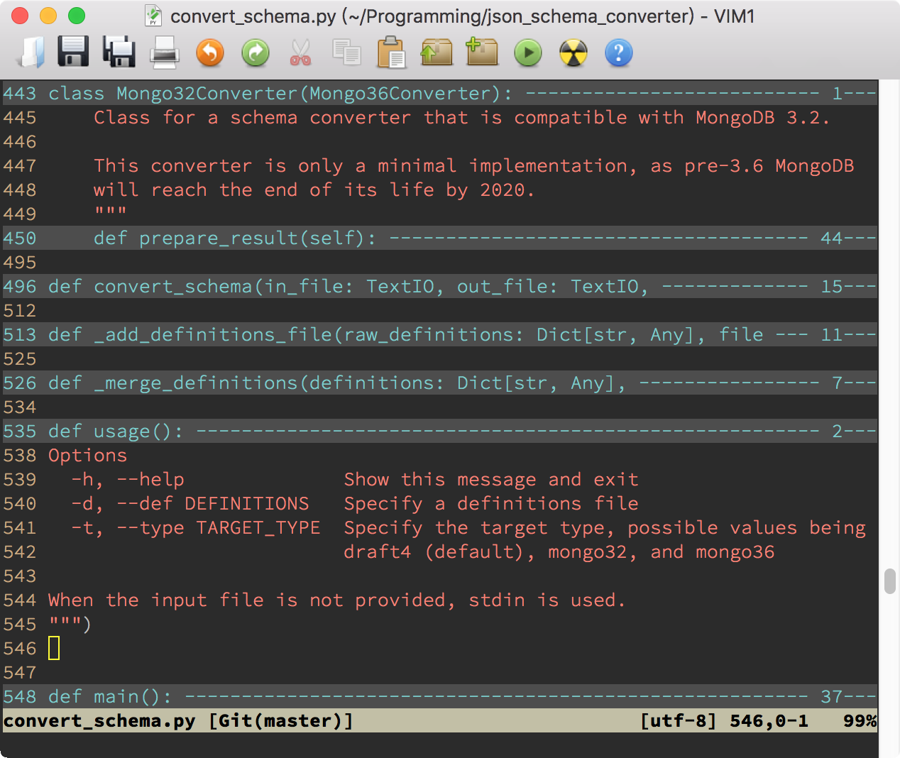
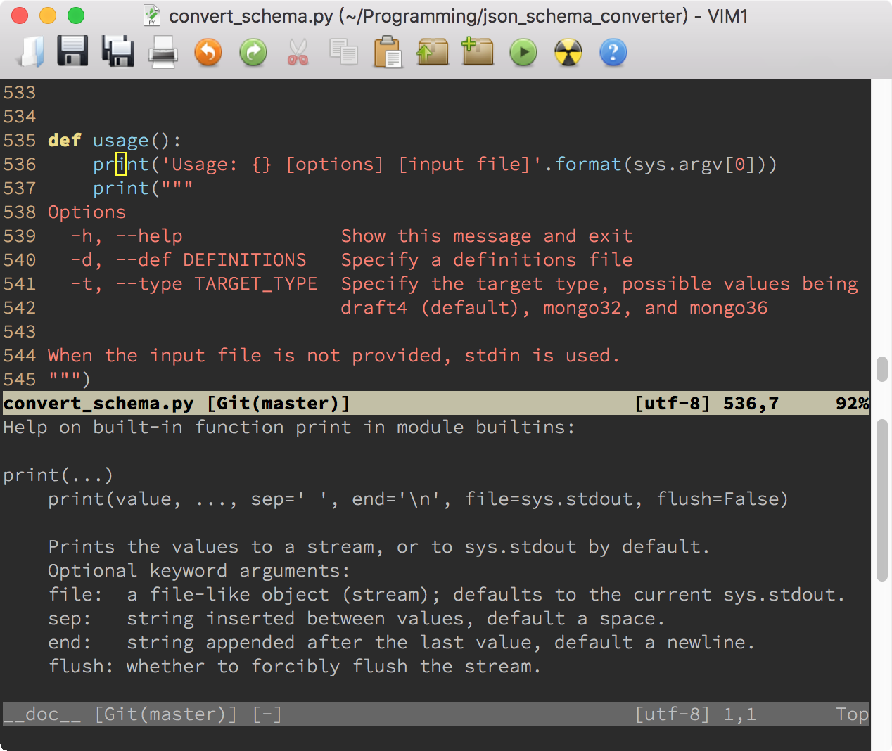
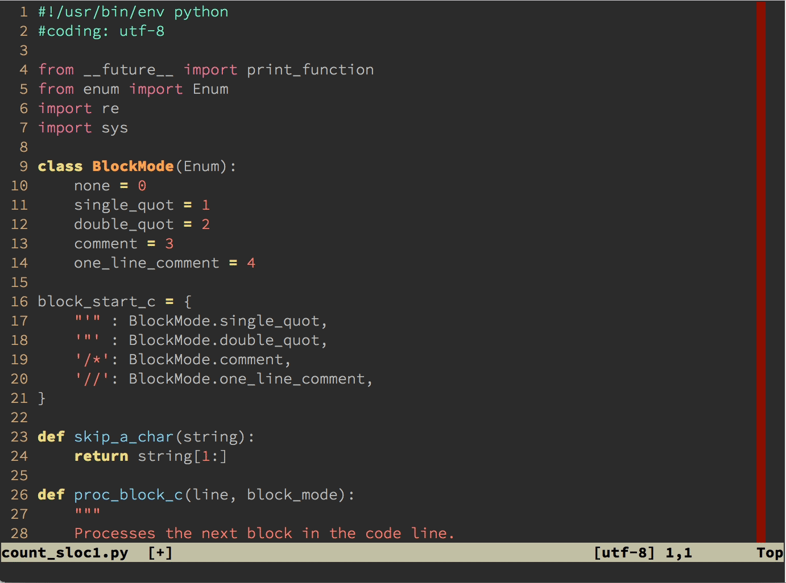

- 00 导读 池建强：Vim 就是四个字“唯快不破”.md.html
- 00 开篇词 我们为什么要学 Vim？.md.html
- 01 各平台下的 Vim 安装方法：上路前准备好你的宝马.md.html
- 02 基本概念和基础命令：应对简单的编辑任务.md.html
- 03 更多常用命令：应对稍复杂的编辑任务.md.html
- 04 初步定制：让你的 Vim 更顺手.md.html
- 05 多文件打开与缓冲区：复制粘贴的正确姿势.md.html
- 06 窗口和标签页：修改、对比多个文件的正确姿势.md.html
- 07 正则表达式：实现文件内容的搜索和替换.md.html
- 08 基本编程支持：规避、解决编程时的常见问题.md.html
- 09 七大常用技巧：让编辑效率再上一个台阶.md.html
- 10 代码重构实验：在实战中提高编辑熟练度.md.html
- 11 文本的细节：关于字符、编码、行你所需要知道的一切.md.html
- 12 语法加亮和配色方案：颜即正义.md.html
- 13 YouCompleteMe：Vim 里的自动完成.md.html
- 14 Vim 脚本简介：开始你的深度定制.md.html
- 15 插件荟萃：不可或缺的插件.md.html
- 16 终端和 GDB 支持：不离开 Vim 完成开发任务.md.html
- 拓展1 纯文本编辑：使用 Vim 书写中英文文档.md.html
- 拓展2 C 程序员的 Vim 工作环境：C 代码的搜索、提示和自动完成.md.html
- 拓展3 Python 程序员的 Vim 工作环境：完整的 Python 开发环境.md.html
- 拓展4 插件样例分析：自己动手改进插件.md.html
- 拓展5 其他插件和技巧：吴咏炜的箱底私藏.md.html
- 结束语 Vim 森林探秘，一切才刚刚开始.md.html
- 捐赠
拓展3 Python 程序员的 Vim 工作环境：完整的 Python 开发环境
你好，我是吴咏炜。
今天这一讲，我会介绍 Python 程序员定制 Vim 工作环境的完整方法。
Python 的流行程度越来越高，Python 程序员们对此一定是很高兴的。在 Stack Overflow 的 2020 年开发者调查里，Python 在最受爱戴（most loved）的语言里排名第三，而在最想要（most wanted）的语言里则已经连续四年排名第一！因此，它在 Vim 的生态系统里受到了良好的支持，也不会是件令人吃惊的事。有开发者已经把 Python 开发所需要的若干插件揉到了一起，组成了一套开箱即用的工具，python-mode。
今天我们就以它为基础，讨论一下 Vim 对开发 Python 提供的支持。
功能简介
Python-mode 实际上是以 Vim 插件形式出现的一套工具，它包含了多个用于 Python 开发的工具。根据官网的介绍，它的主要功能点是：
- 支持 Python 3.6+
- 语法加亮
- 虚拟环境支持
- 运行 Python 代码（
<leader>r） - 添加/删除断点（
<leader>b） - 改善了的 Python 缩进
- Python 的移动命令和操作符（
]],3[[,]]M,vaC,viM,daC,ciM, …） - 改善了的 Python 折叠
- 同时运行多个代码检查器（
:PymodeLint） - 自动修正 PEP 8 错误（
:PymodeLintAuto） - 自动在 Python 文档里搜索（
K） - 代码重构
- 智能感知的代码完成
- 跳转到定义（
<C-c>g） - ……
不过，还是要提醒一句，它的功能虽然挺多，但作为非商业软件，全靠志愿者来贡献代码，并不是所有功能的完成度都很高。有些功能做得尚不完善，有些功能则略显鸡肋，所以，我也不会全部都讲解。我们就择善而从之，在利用它不需要用户介入就能提供的功能外（如语法加亮和缩进），重点讲解它做得好的地方，以及可能有陷阱需要规避的地方。
安装
Python-mode 没有编译组件，全部由脚本代码组成，因而使用你的包管理器安装 python-mode/python-mode 即可，非常简单。
以 minpac 为例，你只需要在 vimrc 配置文件中“Other plugins”那行下面加入：
call minpac#add('python-mode/python-mode')
然后执行 :PackUpdate 命令即可。
配置
在没有任何配置的情况下，python-mode 也是完全可用的。但如果你再做一些基本设置的话，就能够解决一些常见问题和规避一些常见陷阱。
我个人的设置是下面这个样子的：
function! IsGitRepo()
" This function requires GitPython
if has('pythonx')
pythonx << EOF
try:
import git
except ImportError:
pass
import vim
def is_git_repo():
try:
_ = git.Repo('.', search_parent_directories=True).git_dir
return 1
except:
return 0
EOF
return pyxeval('is_git_repo()')
else
return 0
endif
endfunction
let g:pymode_rope = IsGitRepo()
let g:pymode_rope_completion = 1
let g:pymode_rope_complete_on_dot = 0
let g:pymode_syntax_print_as_function = 1
let g:pymode_syntax_string_format = 0
let g:pymode_syntax_string_templates = 0
稍微解释一下：
IsGitRepo是利用 Python 代码检测当前是不是在 Git 库目录下的一个函数，它要求你在 Python 环境里安装了 GitPython（pip3 install GitPython）。- 我们仅仅在当前目录是一个 Git 库下面才启用 rope 支持（
pymode_rope）。Rope 是 python-mode 里提供语义识别和自动完成的主要工具，它会扫描所有子目录并创建 rope 工程目录。如果你一不小心在你的主目录（或子目录非常多的地方）执行 python-mode 的命令，可能会导致 Vim 卡顿（python-mode 并不是一个异步的插件）。所以我们在这儿特别限制一下，防止误操作。 - 我们启用 rope 的完成功能（
pymode_rope_completion）。 - 我们禁用在输入
.号时自动完成的功能（pymode_rope_complete_on_dot）。这是因为 rope 提供的自动完成会侵入式地影响正常输入流，即如果我想不理睬自动完成是不行的。这一点就不如 YCM 了。因此，我们的自动完成仍然使用 YCM。不过，需要的话，我们仍可以通过<C-X><C-O>来使用 rope 的自动完成。 - Python-mode 对 Python 语法的加亮改善还不错，但它的默认行为是把
print作为保留字显示，而不是普通函数。在写 Python 3 时，还是需要修改一下它的行为（pymode_syntax_print_as_function）。 - Python-mode 会试图对字符串中出现的格式化字串和模板替换字串做特殊的加亮（
pymode_syntax_string_format和pymode_syntax_string_templates）。这儿主要的问题是，它会误匹配字符串中出现的{}和$序列。我个人不习惯错误的加亮，不过你可以根据自己的喜好，来决定是不是要启用这个功能。
使用
语法加亮
Python-mode 提供了自己的语法加亮文件。除了上面提到的可以选择对 print 如何加亮，以及在字符串内部进行特殊加亮的选项外，它还提供了很多改进，并且可以由用户通过选项来微调（:help pymode-syntax），如对赋值号（=）的特殊高亮和对 self 的特殊高亮，等等。这些改进我觉得还挺有用。
代码折叠
我个人一直不怎么喜欢代码折叠（主要是觉得额外展开这个步骤非常有干扰，而更愿意一目十行式地快速浏览），所以 Vim 的这个功能我基本不用。如果你喜欢折叠的话，你应该会很高兴 python-mode 能帮你自动折叠 Python 代码。你只需要在 vimrc 配置文件中加入下面这行即可：
let g:pymode_folding = 1
效果见下图：

这个功能会导致打开 Python 文件变慢。你可以试试，斟酌一下自己是否希望使用这个功能。
快速文档查阅
Python-mode 默认映射了 K 对光标下的单词进行文档查阅。跟其他查阅文档的方式比起来，这还是非常快捷方便的。

缩进支持
在 Vim 的运行支持文件中，本来就包含了对 Python 缩进的支持，但默认的支持并没有把像 PEP 8 这样的 Python 编程规范考虑进去，缩进风格并不十分正确。安装了 python-mode 后，缩进就能更好地自动遵循 PEP 8 规范了。
代码检查
不管 Vim 的缩进对不对，如果你在其他编辑器里编辑了 Python 代码，Vim 是不会修正其中的缩进或其他问题的——除非你启用代码检查器。
Python-mode 里带了好几个代码检查器，默认启用的是下面三个：
- pyflakes，一个很轻量的代码检查器，检查常见的 Python 编码问题，如未使用的变量和导入
- pep8，一个专门检查代码是否符合 PEP 8 的检查器
- mccabe，一个专门检查圈复杂度的代码检查器
默认启用哪些检查器，是通过下面的全局变量来控制的：
let g:pymode_lint_checkers = ['pyflakes', 'pep8', 'mccabe']
你可以自己在 vimrc 配置文件里定义这个变量，调节希望使用的代码检查器。我觉得默认的代码检查器还比较合适，因为执行真的很快，基本上可以在执行检查的瞬间帮你检查完代码并标记出问题。你可以手工执行 :PymodeLint 来检查代码，python-mode 也会自动在你保存文件时进行检查。

可以看到，检查的结果会在屏幕的左侧标记出来，表示不同的问题类型；并且光标移到这样的行上，Vim 底部还会显示问题的描述信息。同时，python-mode 检查出问题时会自动打开一个位置列表，我们在第 13 讲提过，这是跟窗口关联的类似于快速修复窗口的信息窗口。由于我们可能在多个窗口/标签页编辑多个文件，位置列表确实比较合适。当 python-mode 认为你修复了所有问题时，这个位置列表也会自动关闭。
顺便提醒你注意一下屏幕右侧的红线（在某些配色方案里可能是其他颜色）。这条线在第 80 列上，也是提醒你写代码不能到那个位置，因为 PEP 8 规定 Python 代码行最长是 79 个字符。如果到达红线位置的话，那 pep8 检查的时候，一定跑不了，会报错的。
上面图中的错误都是 PEP 8 问题，绝大部分可以简单地执行 :PymodeLintAuto 命令来自动解决，用不着我们自己去动手修改代码。
Python-mode 还有两个没有默认启用的检查器：
- pylint，一个功能很强的代码检查器，它可以嗅出你的代码中的坏味道，除了性能，可以说是全面强于 pyflakes（使用它你得擦亮眼睛，做好被它虐的准备）
- pep257，一个检查文档串（docstring）是否符合 PEP 257 的工具（这个工具我个人感觉不成熟，给出的建议有点混乱）
由于 pylint 执行比较慢，我觉得还是先写完代码再专门来扫描并解决其报告的问题比较合适。上面的这个示例代码，跑 pylint 需要超过一秒才能执行完成，在存盘时自动执行检查基本属于不可忍受。这当然也是因为 python-mode 没有异步执行外部命令造成的。我们最后还会再看一下执行慢和异步的问题。
Rope 支持
Rope 是一个 Python 库，提供对 Python 代码的分析、重构和自动完成功能。由于我们使用 YCM 来进行自动完成，也能完成像跳转到定义这样的任务，rope 就略显鸡肋了。不过，它有重命名重构功能，而 YCM 并不支持对 Python 的重命名重构，所以两者功能还不算完全重叠。
你如果决定要用一下 rope 的话，需要了解以下几点：
- rope 会使用一个叫做 .ropeproject（默认名字）的目录，在里面缓存需要的信息；这个目录在当前目录下，或当前目录的一个父目录下；如果找不到，默认会在当前目录下创建这个目录
- 使用命令
:PymodeRopeNewProject 路径可以在指定路径下创建这个 .ropeproject 目录 - 使用命令
:PymodeRopeRegenerate可以重新产生项目数据的缓存 - 默认情况下（
g:pymode_rope_regenerate_on_write等于 1），在文件存盘时 python-mode 即会自动执行:PymodeRopeRegenerate命令
在启用 rope 之后，你就可以使用下面的命令了：
- 使用
<C-X><C-O>来启用自动完成（我们把.还是交给 YCM 了） - 使用
<C-C>g来跳转到定义（跟 YCM 的\gt比，大部分情况下没区别；rope 跳转更好和 YCM 跳转更好的情况都有，但都不多见） - 使用
<C-C>d来查看光标下符号的文档；和K键不同，这个命令可以查看当前项目代码里的文档字串 - 重构（refactor）功能以
<C-C>r开始，如<C-C>rr是重命名（rename）光标下的符号，这些功能还是比较强大的（可以使用:help pymode-rope-refactoring来查看完整的帮助信息）
下面的动图展示了 rope 的若干功能：

替换方案
如果你对 python-mode 的某些功能不满意，可以禁用其部分功能，用其他插件来代替。
首先，如果你如果觉得 rope 提供的额外功能对你用处不大的话，我们可以完全禁用 rope（let g:pymode_rope = 0），专心使用 YCM。这样，硬盘上也就不会出现 .ropeproject 那样的目录了。
其次，如果你真的希望能在写代码的时候自动进行 pylint 检查，那你也可以禁用 python-mode 里的代码检查器功能（let g:pymode_lint = 0），转而使用 ALE 来进行异步检查。你需要安装它（包管理器需要的名字是 dense-analysis/ale），并在 vimrc 配置文件中加入：
let g:ale_linters = {
\'python': ['pylint'],
\}
别忘了这种情况下，你需要自己用 pip 安装 pylint。这不像 python-mode 的情况，所有工具都已经打包在那一个套件里面了。
内容小结
在这一讲，我们通过介绍 python-mode，介绍了一个比较适用于 Python 程序员的 Vim 开发环境。这个工具集成了对 Python 的语法加亮、代码折叠、文档查阅、代码检查、自动完成等多方面的功能，对 Python 开发者非常适用。我们同时也讨论了 Vim 之外的一些代码检查工具，以及当你对 python-mode 不满意时，如何部分替换其功能。
课后练习
同样地，学完今天这一讲之后，你的主要任务就是把 python-mode 装起来、配置好、用一下。如果遇到什么问题，欢迎留言和我讨论。
我是吴咏炜，我们下一讲再见！
© 2019 - 2023 Liangliang Lee. Powered by gin and hexo-theme-book.